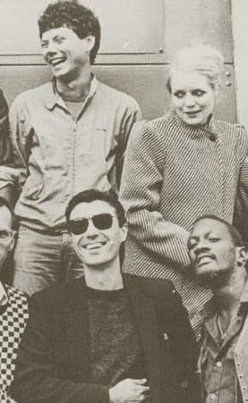

FACTS are
living turned
inside out.

3. Talking Heads collaborated with producer Brian Eno on More Songs About Buildings and Food (1978), Fear of Music (1979), and Remain in Light (1980).
4. Bryne’s lyrics are inspired by preachers, one day finding himself shouting, “You may find yourself behind the wheel of a large automobile.”
5. David Byrne, Chris Frantz and Tina Weymouth attended art school together in Providence, Rhode Island. It was there that the three formed their first music group called “The Artistics” in 1974.